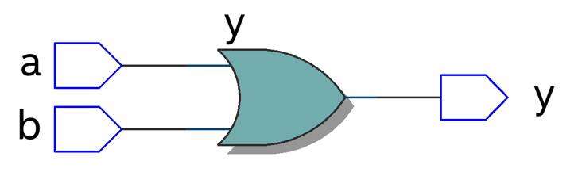

module example2 ( a, b, y ); y = a [blank1] b; endmodule 1. Which design level is used in this module? (gate, dataflow, behavioral) 2. For the [blank1], which operation is use for a and b to output y?(|,&,^) 
